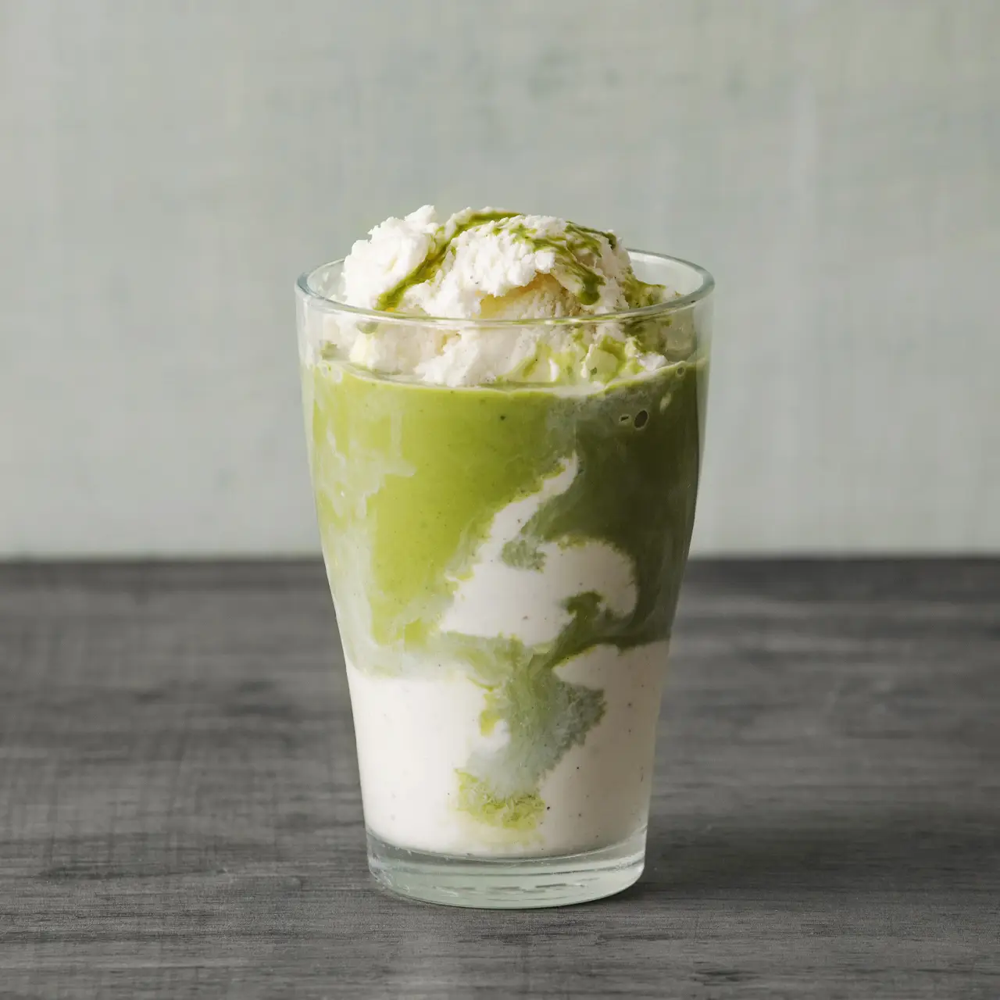

Matcha Milkshake
Home

Matcha in a creamy milkshake is the BEST combination. If you like matcha lattes and matcha desserts, this green tea treat will be perfect for you! I’m showing you how to make an easy matcha milkshake with either vanilla ice cream or my homemade matcha ice cream. Both versions are easy and incredible!
Ingredients
-
Matcha powder
-
Milk
-
Vanilla ice cream OR matcha green tea ice cream
Instructions
-
Whisk together the matcha powder and 3 tablespoons of milk to remove all clumps. Add to blender
-
Add 3 scoops of ice cream to blender and blend until incorporated.